Full length
Overall profile and curvature.
Artifact record and analysis
Type / Pattern: French Model 1896 Cavalry Saber
Approx. Date: c. late 19th century (post-1896 adoption)
Origin: France – likely Manufacture d’Armes de Châtellerault (or comparable state arsenal)
Current Status: Private collection (Historical Sword Society)
Abstract: The French Model 1896 Cavalry Saber represents a late nineteenth-century effort to modernize French mounted arms while preserving the cutting and thrusting capabilities expected of cavalry weapons. Its steel guard, straight or slightly curved service blade, and military pattern construction reflect the transition from traditional cavalry sword design toward more standardized modern service arms. This example is presented as part of the Historical Sword Society collection for study, documentation, and comparison with earlier French cavalry patterns.
Use this section for detailed photographs: full length, hilt, pommel, markings, scabbard, and close-ups of condition.
Overall profile and curvature.
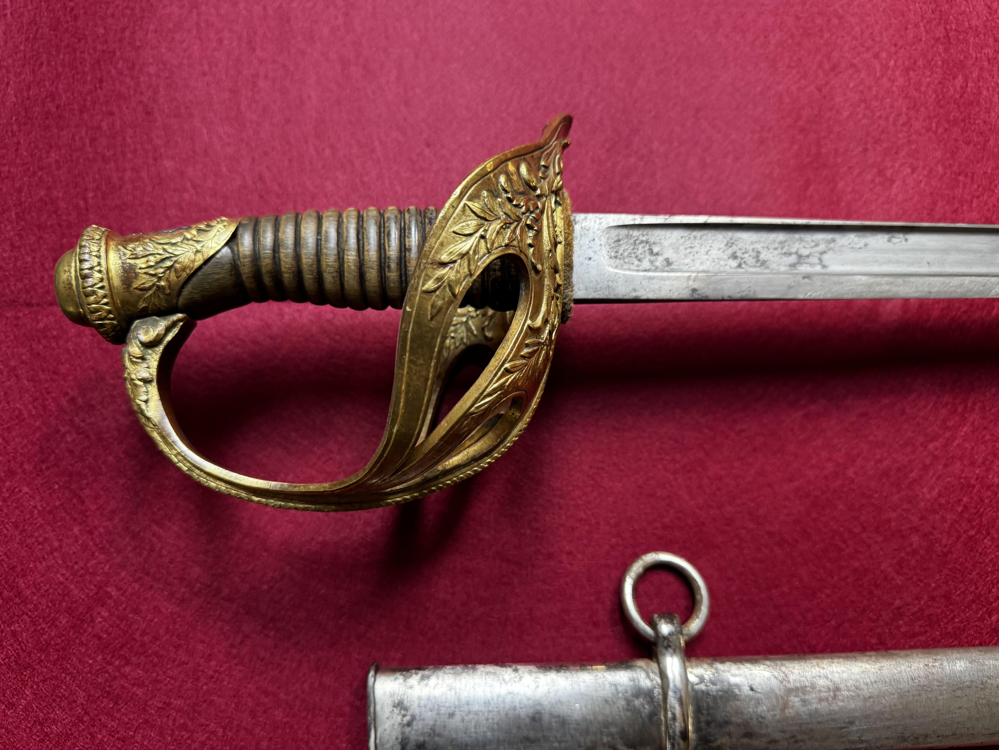
Secondary profile of the blade.

Surface condition and fuller definition.
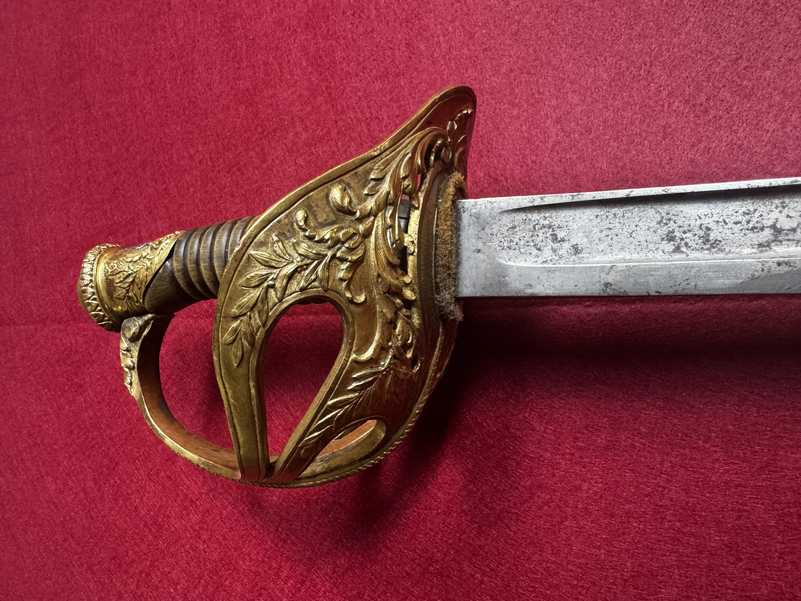
Edge geometry and wear patterns.
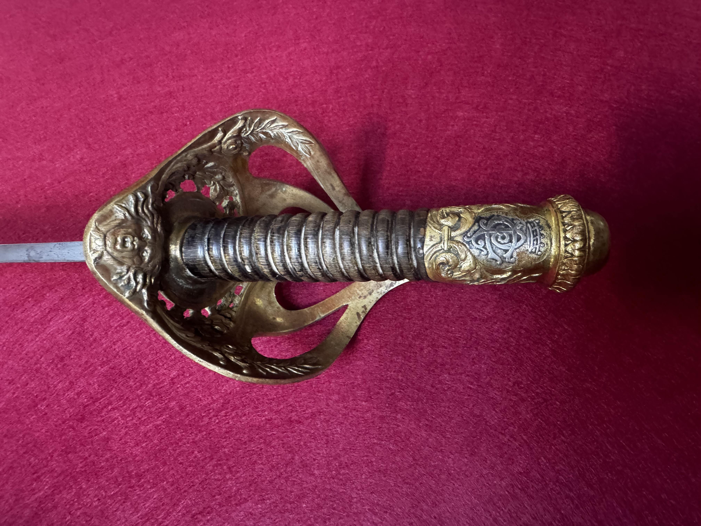
Guard and grip construction.
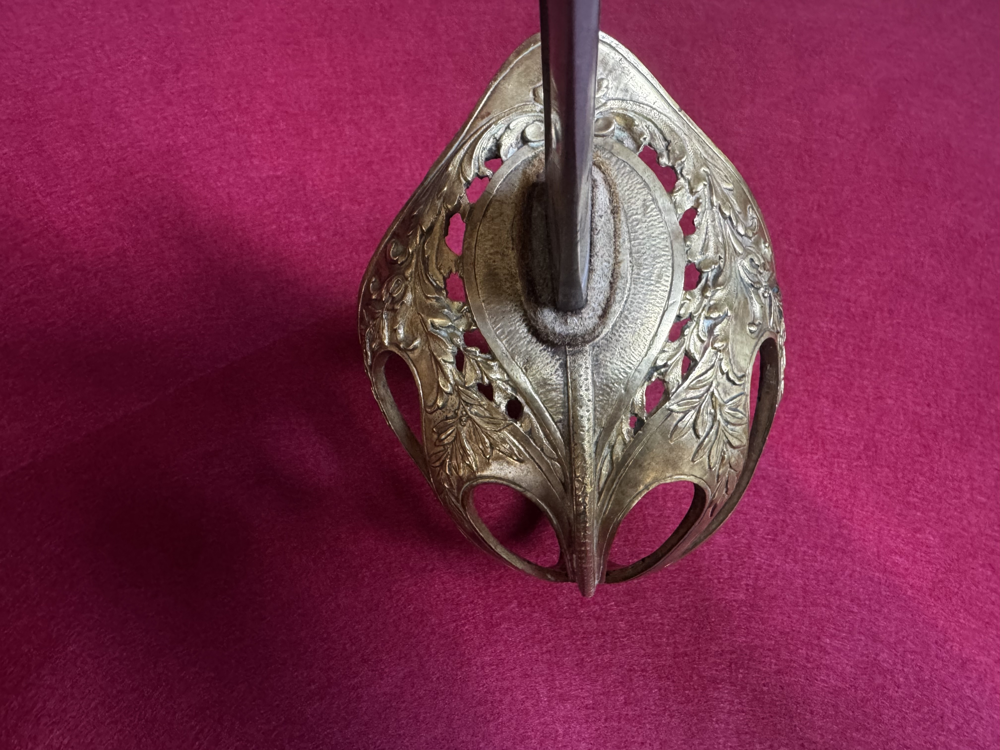
Protective structure and form.
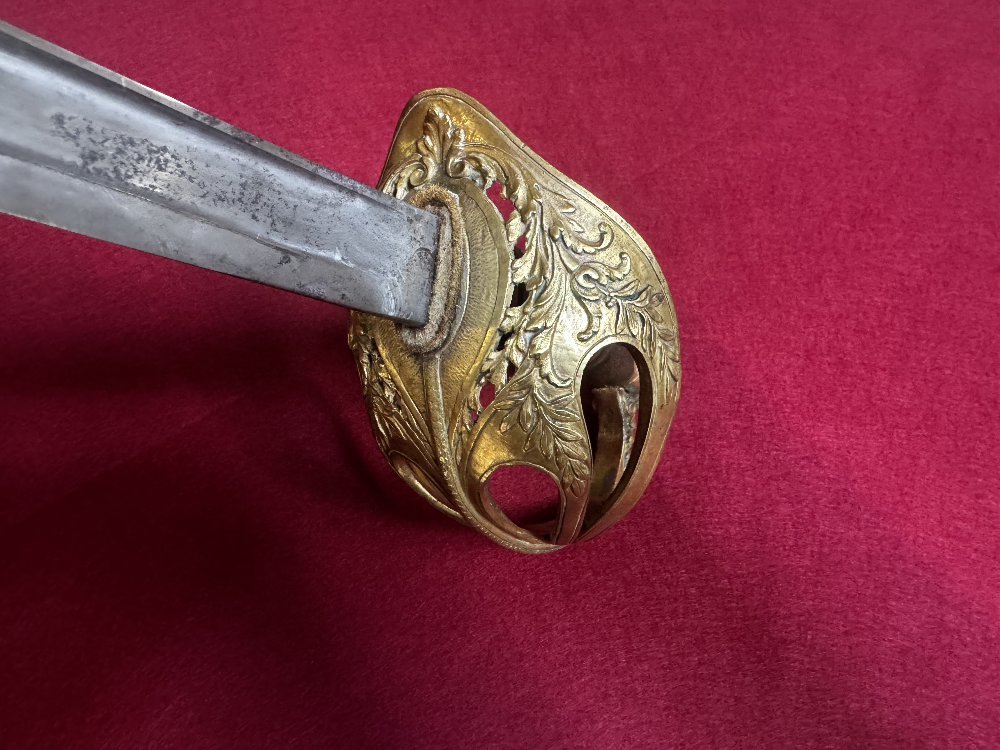
Grip material and wrapping.
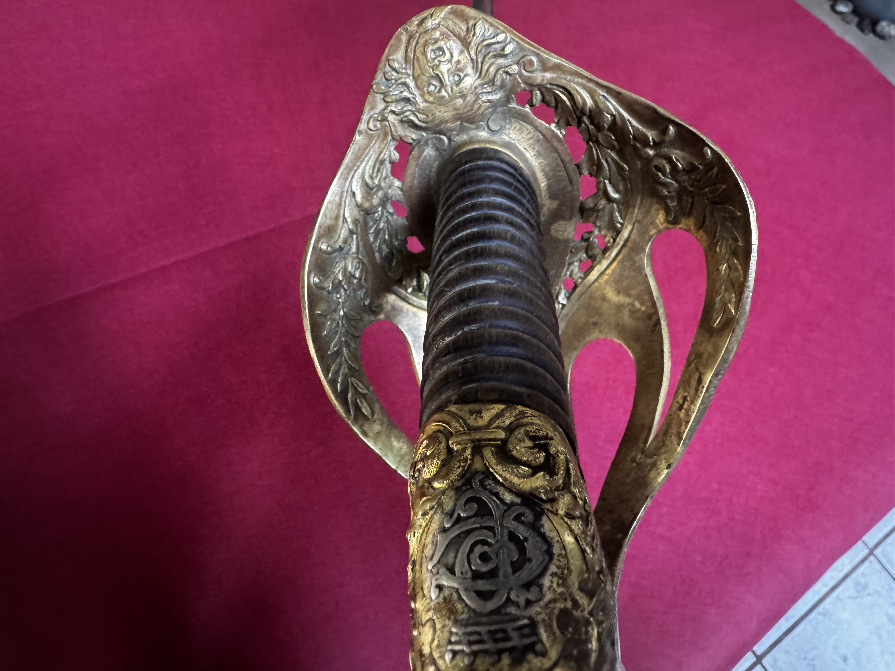
Pommel shape and peening.
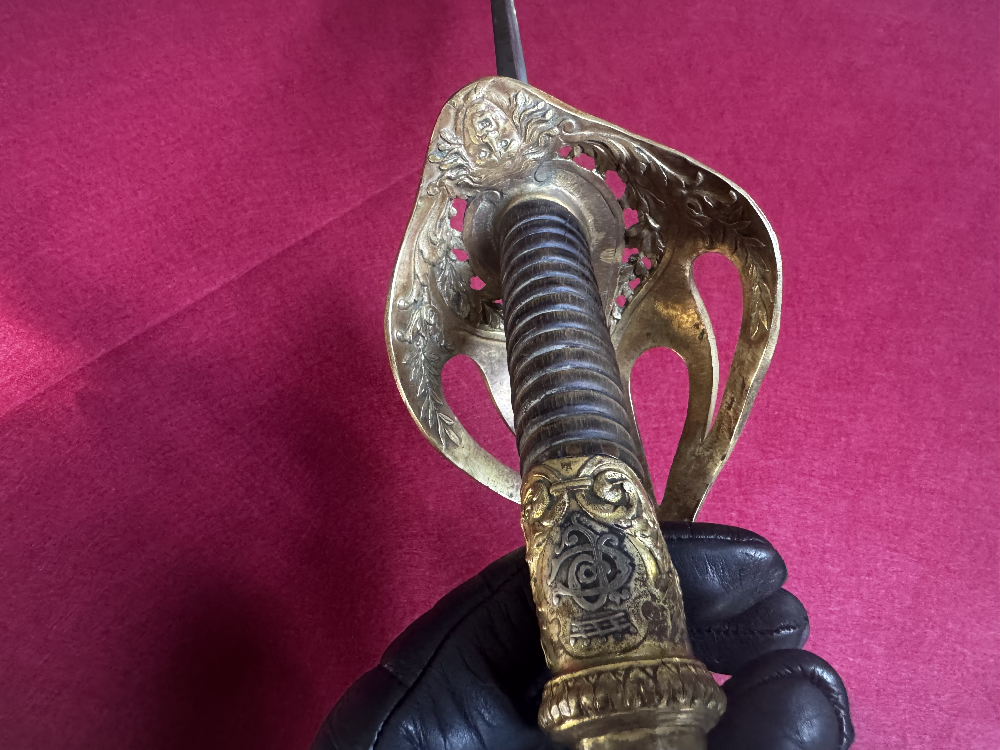
Maker marks and inspection area.
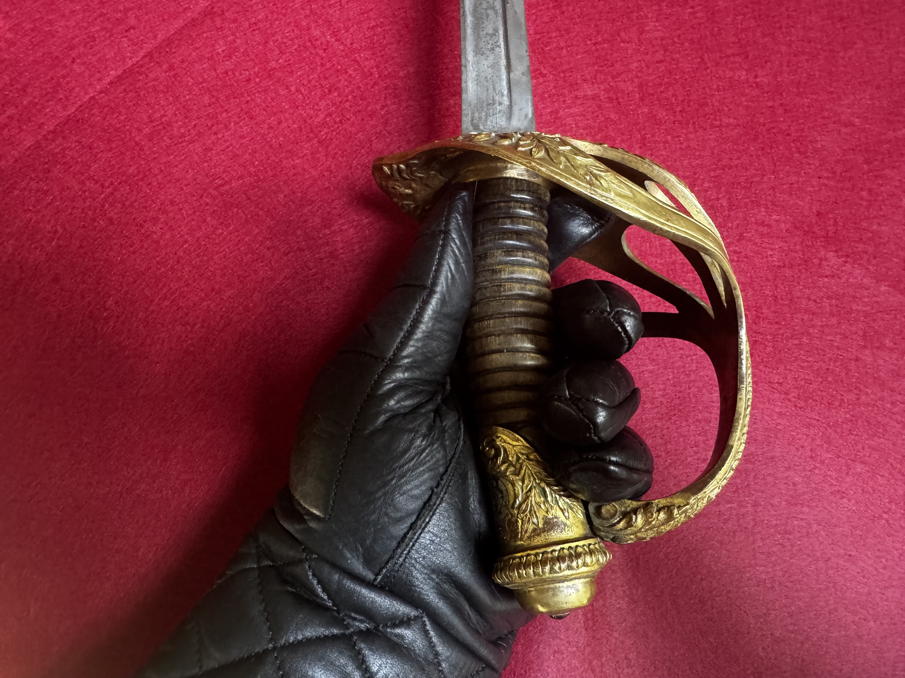
Stamped or engraved identifiers.
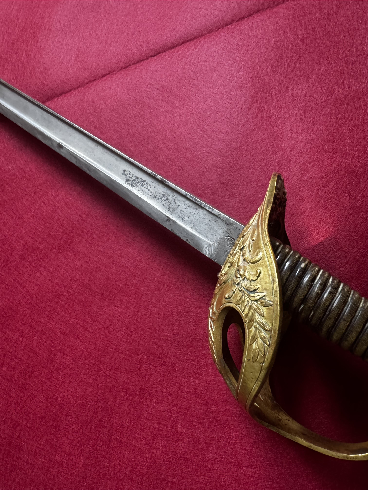
Blade spine and inscriptions.
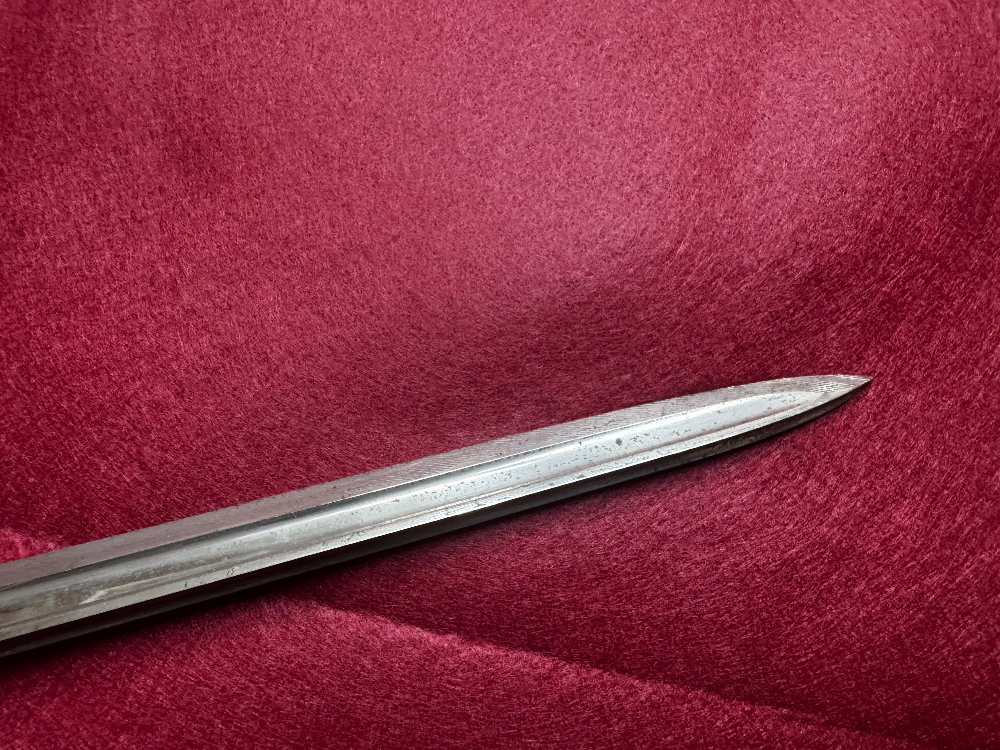
Scabbard body and fittings.
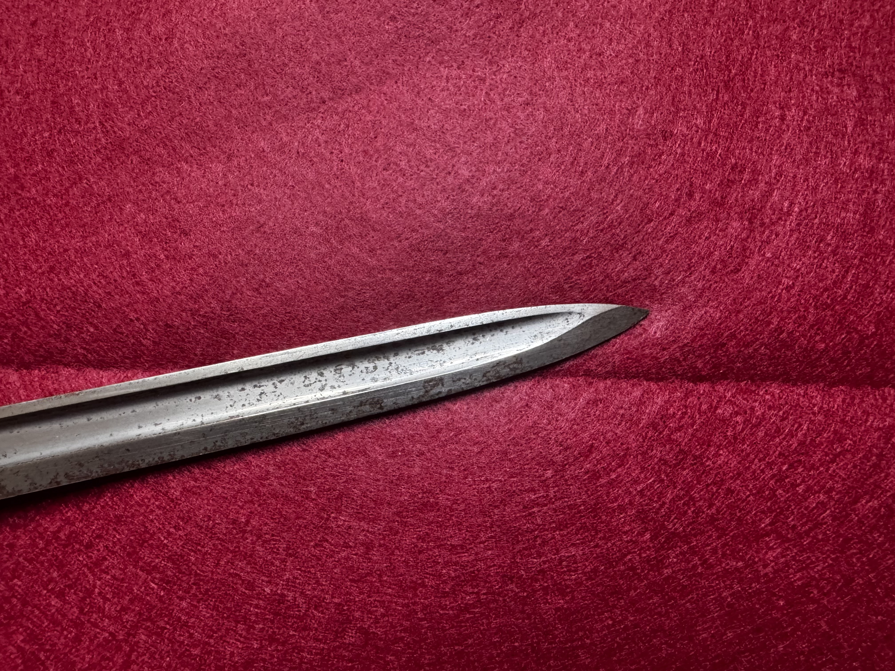
Throat, rings, or drag.
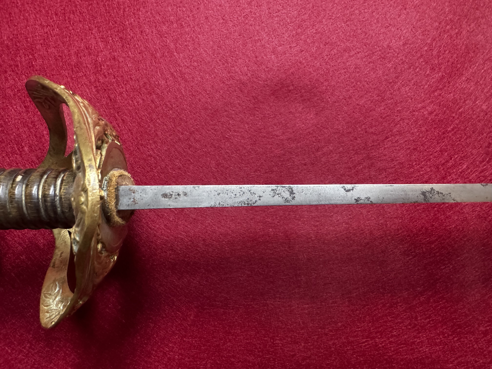
Supplementary view for study.
| Overall length | [mm / in] |
| Blade length | [mm / in] |
| Blade width (at ricasso) | [mm / in] |
| Blade thickness (at ricasso) | [mm / in] |
| Point of balance | [mm / in from guard] |
| Weight | [g / lb] |
| Fullers | [description] |
| Edge geometry | [description] |
| Hilt material | [brass / steel / etc.] |
| Grip | [wood/leather/wire/etc.] |
| Scabbard | [present/absent; material; markings] |
Observed markings: [List spine, ricasso, guard, scabbard marks]
Interpretation: [Arsenal/manufacturer, inspector marks, unit marks, export marks]
Identification basis: [Pattern features, dimensions, comparison references]
References: Add citations to books, catalogs, museum collections, or archival documents.
[List acquisition details, prior owners (if known), dealer notes, and supporting documentation.]
{kind=link}
{kind=link}
{kind=link}
{kind=link}
{kind=link}
{kind=link}
{kind=link}
{kind=link}
{kind=link}
{kind=link}
{kind=link}
{kind=link}